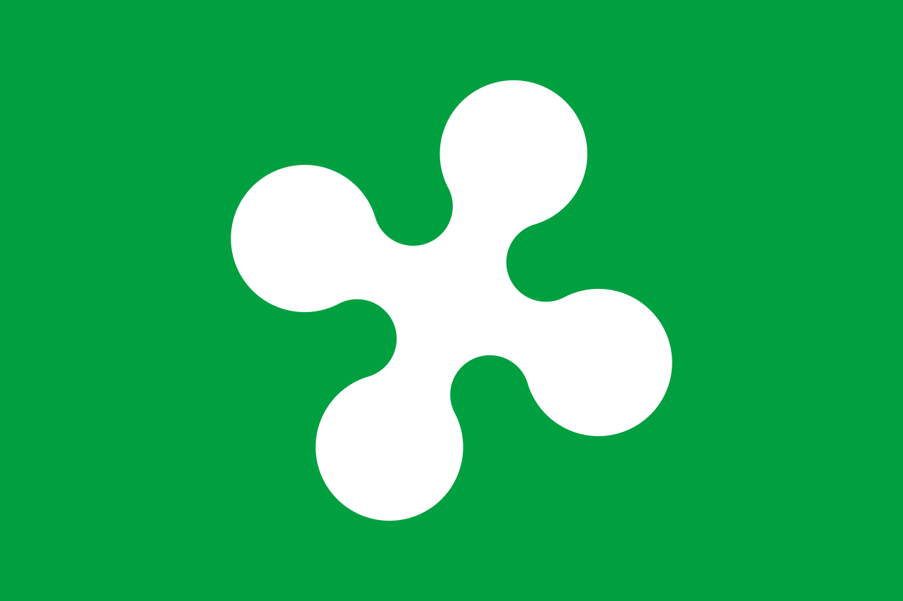
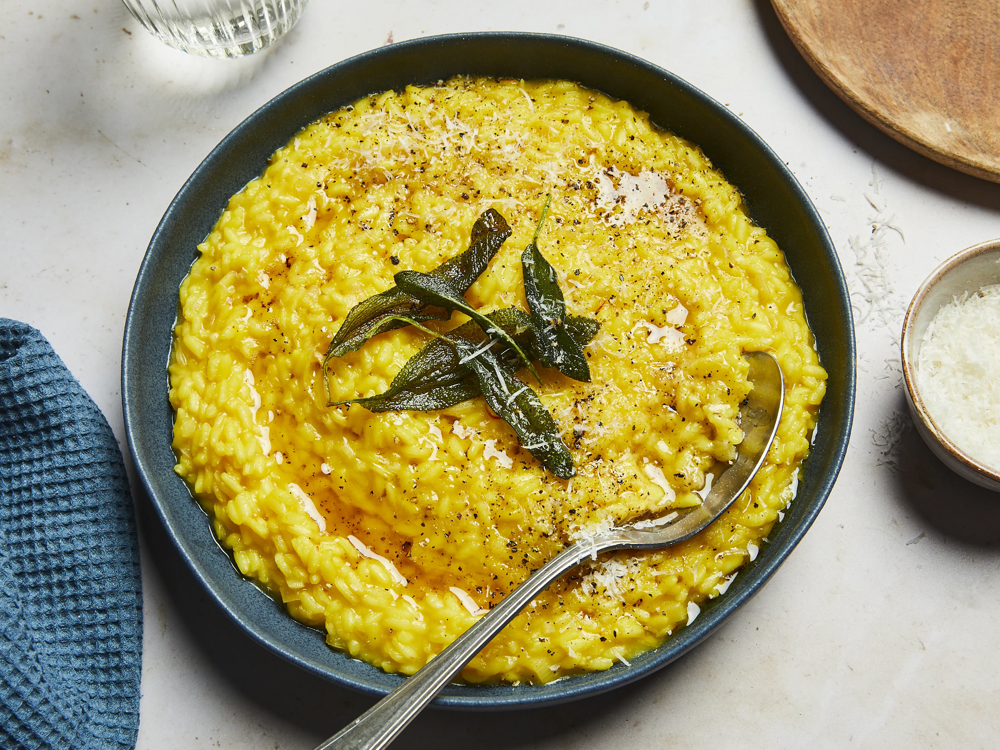
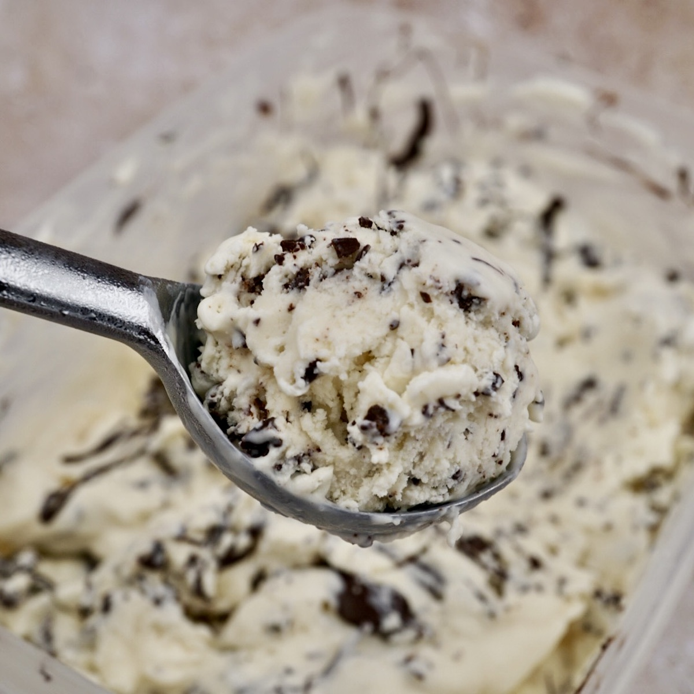
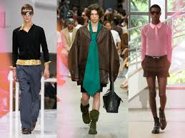

Lombardy is located in Northern Italy (Italia Settentrionale) and is the fourth largest region in the
country. It borders Switzerland to the north and several Italian regions including Piemonte, Veneto, and
Emilia-Romagna.
The region is divided into 12 provinces: Sondrio, Varese, Como, Lecco, Milano (Milan),
Pavia, Brescia, Lodi, Mantova, Bergamo, Monza and Brianza.
Capital (and largest city): Milano (Milan)
Landscape
Lombardy is divided into three main natural zones: mountains, hills, and plains.
Around 40% of the region is mountainous, forming part of the Italian Alps.
The Bernina Massif reaches 4,050 meters and represents one of the highest peaks in the region.
The region also contains major valleys such as Valtellina, Val Chiavenna, and Val Camonica,
where many communities are located. The southern part is dominated by the Pianura Padana,
one of the largest plains in Italy.
Lakes and Rivers
Lombardy is known as Italy’s “lake region” due to its many famous lakes.
Lake Como, Lake Garda, and Lake Maggiore are among the most well-known,
each offering unique landscapes and towns.
The region is also crossed by important rivers such as the Po, Adda, Oglio, Lambro, and Mincio.
Climate
The climate varies depending on elevation and geography.
Summers are generally warm and humid, while winters can be cold, especially in alpine areas
where snowfall is common.
Origins
Early Peoples
The earliest known influence in Northern Italy came from the Etruscans, an ancient civilization that
developed in central Italy.
They contributed to early forms of organized government and settlement structures.
Before Roman expansion, Lombardy was inhabited by Celtic peoples who lived across the region’s plains and
valleys.
Roman Period
In the 5th century BCE, the Romans conquered Northern Italy, incorporating it into the province of Cisalpine
Gaul.
The region became strategically important due to its position at the base of the Alps.
The Romans founded several major cities, including Milan, Como, Brescia, Cremona, Lodi, and Pavia.
Milan later became one of the most important cities in the Western Roman Empire.
Germanic Influence
After the fall of the Roman Empire, the region was invaded by Germanic tribes, including the Lombards.
Over time, Roman and Germanic cultures blended, influencing language, traditions, and even cuisine.
Traces of this influence can still be seen today in Northern Italian food traditions, such as dishes using
pork, butter, and stuffed pasta.
Medieval Italy
During the Middle Ages, Lombardy developed into wealthy city-states that formed the Lombard League to
resist imperial control.
A major victory at the Battle of Legnano (1176) strengthened regional autonomy and increased Milan’s
influence.
Invasions and Unification
Over the centuries, Lombardy was controlled by various European powers, including France and Austria.
After periods of conflict and rebellion, the region was finally incorporated into the Kingdom of Italy in
1859.
The Italian unification (Risorgimento) was a political movement that brought together the Italian peninsula
into a single nation-state.
Population and Major Cities
Population
Lombardy is the most populous and wealthiest region in Italy, with approximately 10 million residents.
It accounts for about one-sixth of the country’s total population.
The region covers an area of 23,844 km², with a population density of about 420 people per km².
It is also considered one of the richest regions in Europe.
Major Cities (as of 2026)
1. Milan
Milan (Milano) is the capital of Lombardy and one of Italy’s most important cities for fashion,
finance, design, and culture. Known worldwide as a global fashion capital, the city is home to
iconic landmarks such as the Duomo di Milano, the Galleria Vittorio Emanuele II, and Leonardo da
Vinci’s masterpiece The Last Supper. With its mix of historic architecture and modern innovation,
Milan represents the dynamic and cosmopolitan spirit of northern Italy.
Population: 1,362,863 people
2. Brescia
Brescia is a historic city in eastern Lombardy known for its rich Roman heritage and industrial
importance. The city’s archaeological area, including the Capitolium and Roman Forum, is recognized
as a UNESCO World Heritage Site. Brescia also features medieval castles, elegant squares, and a
strong cultural identity, making it one of Lombardy’s most historically significant cities.
Population: 201,342 people
3. Monza
Located just north of Milan, Monza is famous for its royal history, beautiful parks, and connection
to motorsport. The city is home to the Royal Villa of Monza, a former residence of the Habsburg
rulers, as well as one of Europe’s largest enclosed parks. Monza is also internationally known for
the Autodromo Nazionale Monza, one of the oldest and most famous Formula 1 racing circuits in the
world.
Population: 123,672 people
4. Bergamo
Bergamo is a charming city divided into two parts: the historic Città Alta (Upper Town) and the
modern Città Bassa (Lower Town). Surrounded by Venetian walls that are a UNESCO World Heritage Site,
the medieval upper city is known for its cobblestone streets, historic squares, and landmarks such
as the Basilica of Santa Maria Maggiore. Bergamo’s unique blend of history, art, and architecture
makes it one of Lombardy’s most picturesque destinations.
Population: 120,629 people
Landmarks
Duomo di Milano (Milan Cathedral)
The Duomo di Milano (Milan Cathedral) is an iconic masterpiece of Gothic architecture and the
largest church in Italy. Taking nearly six centuries to build (1386 to 1965), it is famous for its
shimmering pink-white Candoglia marble, a rooftop you can walk on, and over 3,400 statues.
Galleria Vittorio Emanuele II is the most famous shopping gallery in Italy. Built in neo-Renaissance
style, it is one of the greatest examples of iron architecture in Europe. With its great triumphal
arch entrance that stands out majestically next to the Duomo of Milan, it has a cross-shaped plan
and the intersection is called the Octagon, with the central dome measuring 47 meters in height.
Flag

The flag of Lombardy features a green field with the Rosa Camuna (also known as the curvilinear cross) in
white.
Adoption
The design was first used in 1975 (de facto), but was not officially recognized until 2019 (de jure).
Symbolism
Green represents the Po Valley, while the Rosa Camuna symbolizes light and originates from prehistoric rock
drawings.
The symbol comes from the ancient Camuni people, who lived in the eastern valleys of Lombardy during the
Iron Age and are known for their rock engravings in Valcamonica.
Languages
Lombard Language
The Lombard language belongs to the Gallo-Italic group and differs from Standard Italian in phonology,
grammar, and vocabulary.
It has historical influences from Celtic and Germanic roots, reflecting the region’s complex history.
Italian, in contrast, is a Romance language strongly influenced by the Tuscan dialect.
Status of Lombard
Lombard is considered a minority language and is structurally distinct from Italian according to linguistic
sources such as Ethnologue and UNESCO.
However, it is not officially recognized as a protected linguistic minority in Italy or Switzerland.
It has often been misclassified as a dialect of Italian, despite belonging to a different Romance subgroup.
Dialects
Lombard is not a uniform language and includes several regional varieties such as Western, Eastern, Alpine,
and Southern Lombard.
Examples include Milanese, Bresciano, Sondrio, and Cremonese, which vary depending on the local area.
Geographical Distribution
Lombard is spoken mainly in Northern Italy, including most of Lombardy, eastern Piedmont, and western
Trentino.
It is also present in parts of Switzerland (Ticino and Graubünden) and in immigrant communities in Brazil,
particularly in Santa Catarina.
Historical and Modern Use
Historically, many residents of the region primarily spoke Lombard, while Italian was used as a literary
language.
After the 1950s, Standard Italian became dominant due to economic and social changes.
Today, all Lombard speakers also speak Italian, although proficiency varies by age and region.
Older generations tend to be more fluent in Lombard than younger ones.
Food
Lombard cuisine is known for its rich and hearty dishes, shaped by the region’s agricultural traditions and
Alpine influences. Unlike the olive oil-based cooking of southern Italy, Lombardy relies heavily on butter,
rice, meat, cheeses, and dairy products. Famous for dishes such as risotto, polenta, and slow-cooked meats,
the region’s cuisine combines simple ingredients with luxurious flavors that are enjoyed throughout Italy.
Primo (First Course)

Risotto Alla Milanese
Risotto alla Milanese is an iconic northern Italian dish famous for its golden hue and earthy aroma.
It is made by toasting short-grain rice—like Arborio or Carnaroli—with onions, white wine, and
traditional beef marrow. The rice is slowly cooked in rich broth and finished with saffron, butter,
and Parmigiano-Reggiano.
Secondo (Second Course)
Cotoletta Alla Milanese
Cotoletta alla Milanese is one of Lombardy’s most famous traditional dishes, consisting of a breaded
and fried veal cutlet. Originating in Milan, this dish has been prepared for centuries and is known
for its crispy golden coating and tender meat inside. Today, it remains a classic example of Milanese
cuisine and an important part of Lombardy’s culinary heritage.
Dolce (Dessert)

Stracciatella
Stracciatella is a variety of gelato with fine strands of drizzled chocolate stirred through it. It
was originally created in Bergamo, northern Italy, at the Ristorante La Marianna in 1961.
Stracciatella was inspired by stracciatella soup, made from broth into which beaten egg is drizzled,
popular around Rome.
Regional Spotlight
Pannetone
Panettone is an Italian sweet bread and fruitcake that is associated with the city of Milan. It is
usually prepared for Christmas and New Year in Western, Southern, and Southeastern Europe, as well
as in South America, Eritrea, Australia, and North America. Panettone is tall, with the appearance
and texture of bread.
Art and Music
Fashion

Milan Fashion Week
Milan is internationally recognized as one of the world's leading fashion capitals, alongside Paris, New
York City, and London. With a long history in textiles, luxury goods, and design, the city became a major
fashion center in the 20th century and is now especially known for its ready-to-wear fashion industry.
Today, many of Italy’s most famous fashion houses are based in Milan, reinforcing its global influence on
style and trends.
The city's fashion reputation is supported by famous shopping districts such as Quadrilatero della Moda and
Galleria Vittorio Emanuele II, as well as major Italian fashion houses including Prada, Armani, and Versace.
These have helped establish Milan as a global center of fashion, luxury, and design.
Alessandro Mahmoud, known professionally as Mahmood is an Italian singer-songwriter born in Milan. He became
internationally famous after winning the Sanremo Music Festival in 2019 with his song Soldi, which also
brought him second place at the Eurovision Song Contest 2019. Known for blending pop, R&B, and modern
electronic influences, he is one of Italy’s most successful and widely recognized contemporary artists.
Explore the Beauty of Lombardy
Want to learn more about Lombardy? Watch this video to explore its landscapes,
history, culture, and traditions.